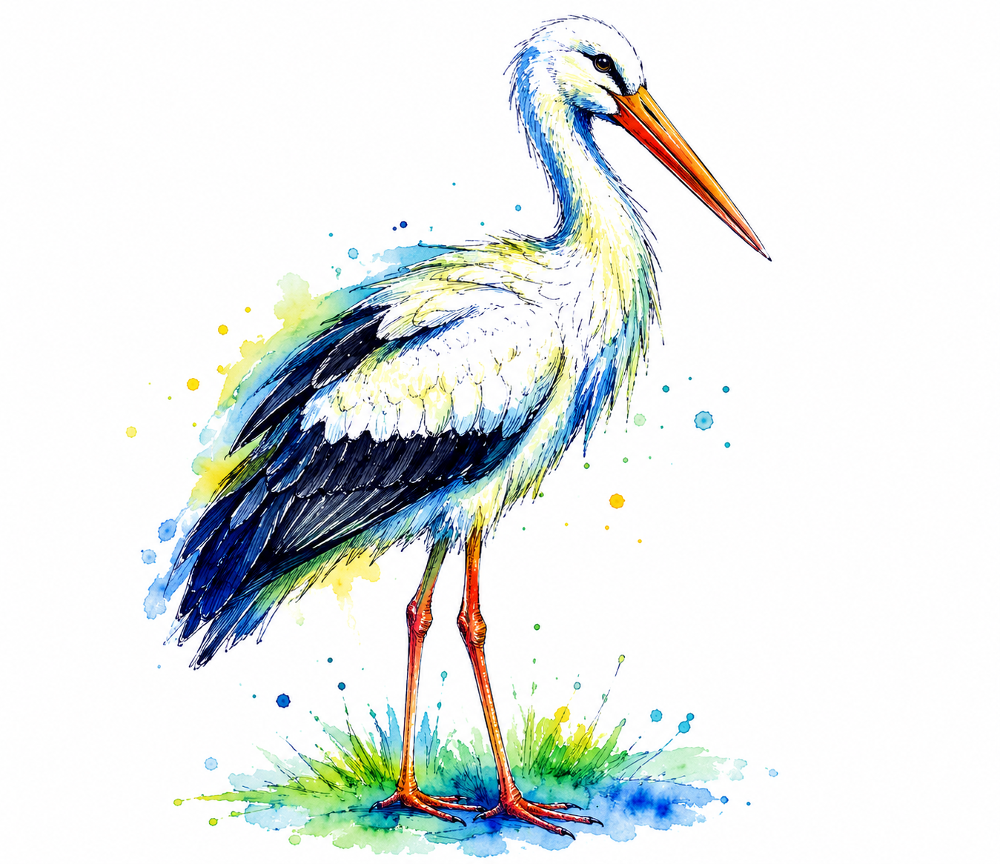
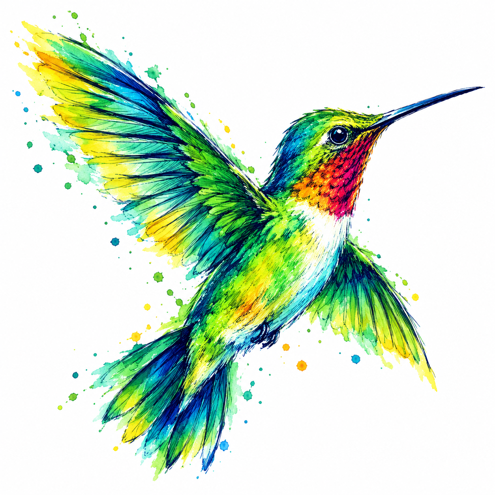
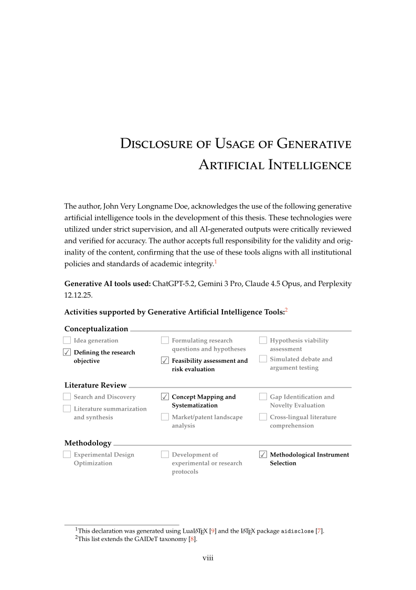
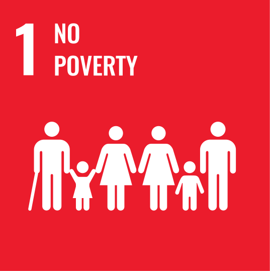

31 August 2026
Choosing which "list of…" gets printed
One option turns off the List of Tables, Listings or Algorithms — without editing the configuration file that registers them.
Read →Release notes, new schools and notes from the project.
One option turns off the List of Tables, Listings or Algorithms — without editing the configuration file that registers them.
Read →
The template leaves Portugal for the first time, with Humboldt-Universität zu Berlin, plus appendix labels, a way to skip individual lists, and a chapter-styles showcase.
Read →
A new school — Faculdade de Farmácia da Universidade de Lisboa — a build option to cap the PDF size, and a fix for AMS symbols under pdfLaTeX.
Read →
The template is renamed to novathesis, gains a proper colophon page, and drops its last external dependency.
Read →
Glossaries move to bib2gls — a migration every existing document needs — and pdfLaTeX builds get about three times faster.
Read →
Abstracts in Simplified and Traditional Chinese, support for IPL/ISEL, and automated integrity statements for NOVA FCSH.
Read →
A formal AI-usage declaration for your thesis, support for FCUL, IST and ISEG, and a new spine design.
Read →
SDG icons on the abstract page, seven more languages for covers and fixed strings, and the Palatino font styles.
Read →